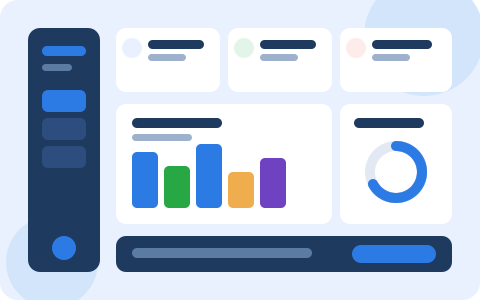

EduPulse forecasts final grades (0–20 scale) from study habits and past scores, flags at-risk students early, and generates personalized next-step recommendations for every learner.

One platform for the full loop — data in, prediction out, action taken. No spreadsheets, no guesswork.
ML model predicts G3 final grades with confidence bands and plain-English interpretation.
Automatic flags for Needs Improvement & Average students with contact tracking.
Study-time, attendance and habit-based recommendations per student, not generic advice.
Teachers add G1/G2 marks, bulk import, and track history with one-click CSV export.
Dedicated admin, teacher and student workspaces with trends, leaderboards and reports.
Role-based access, session guards and local-first demo mode. Your data stays yours.
Designed for real classrooms — a teacher can go from signup to first prediction in under five minutes.
Enter study hours, failures, absences, health and prior grades (G1/G2) — or import in bulk.
Get predicted G3, performance level and the top factors driving the result.
Assign study plans, contact at-risk learners, and watch trends improve over time.
Each portal shows only what that role needs — nothing more, nothing confusing.
My marks, predictions, study habits and recommendations in one calm dashboard.
Class overview, at-risk list, add-marks and attendance — with CSV export.
Manage students, teachers, subjects and institution-wide reports.
Role-based route guards on every portal page · validated forms with inline errors · responsive down to 360px phones · works offline in demo mode and live when the Flask backend is reachable. API base is centralized in js/config.js.
Create an account or explore the live demo — no credit card required.